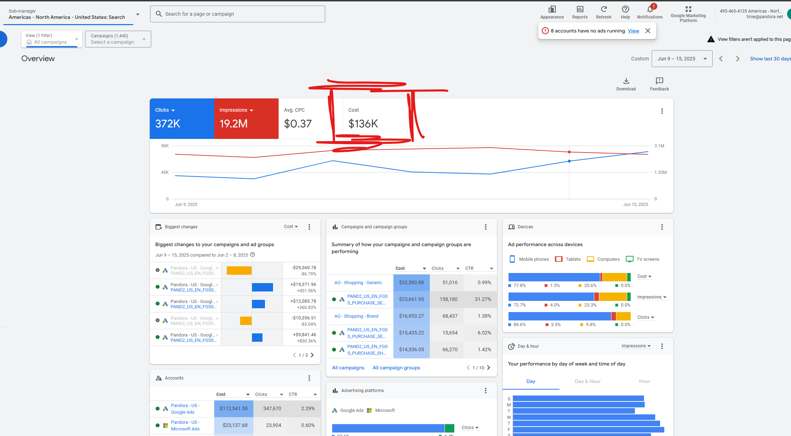

2 Operational Tasks
This section outlines the key operational tasks I regularly managed. These activities are crucial for keeping our dashboards current and ensuring timely data sharing with stakeholders.
Operational tasks are divided between you and Tomas. You can find and track these tasks on the team’s Asana board, where they are tagged as operational:
Additionally, Tomas has prepared a detailed file describing each operational task and the steps required to complete them:
Below, you will find further explanations about the specific tasks I managed and those you will now be responsible for.
2.1 Weekly Task Overview
| Day | Task(s) |
|---|---|
| Monday | Bloomreach Update, Adobe Data |
| Tuesday | LiftLab QA |
| Wednesday | Promo Calendar, Media Spend File (bi-weekly) |
2.2 Monday
2.2.1 Bloomreach Update
Purpose:
Ensure the latest Bloomreach data is shared with LiftLab. Bloomreach manages our customer engagement and marketing data.
2.2.1.1 Steps
Receive Data
- Every Monday at 8 AM, you will receive an email with the previous week’s Bloomreach data at the market level.
- Copy this data from the email into a new Excel file.
- Tomas can assist with initial account setup and email scheduling if needed.
Check and Prepare Data
- Only the most recent week from the Bloomreach email is needed.
- For US/CA, the email may only include US data. Log in to Bloomreach to ensure both US and CA are covered for the entire week.
- Bloomreach Analytics (Login with ‘pandora’ at Bloomreach Engagement if prompted.)
- Filter for the last week, ensuring CA is included. Download the CSV. Merge files if needed.
- Replace the US/CA data in your file with the newly retrieved data (including Canada). Other markets can remain unchanged.


Format and Upload Data
- Flip the order of columns: #0 Sent should come before #1 timestamp.
- Remove any unnecessary headers.
- Copy the latest week into the Google Sheet, ensuring the format matches requirements.
- Refer to the Tomas Master Document for detailed steps.
Schedule Backfill in GCP
Generate and Send CSV
- Generate the CSV of the latest week and send it to LiftLab.
- Email the CSV to:
pandora-us_datafeed@liftlab.com
CC:nchalla@liftlab.com,jjohn@liftlab.com
2.2.2 Adobe Data
Purpose:
Update the Adobe data used in our All Tides Rise Dashboard.
Instructions:
Follow the steps outlined in the Tomas Master Document.
Troubleshooting:
- If the Adobe Report Builder refresh takes unusually long, try refreshing the page and running the report again.
- If problems persist, ask Tomas to attempt the refresh from his end.
2.3 Tuesday
2.3.1 LiftLab QA
Purpose:
Perform a quality assurance (QA) check on the data displayed in the LiftLab ROI Dashboard to ensure spend data matches our internal sources.
Instructions:
- Ensure you have access to the LiftLab ROI Dashboard.
- The dashboard updates every Tuesday; complete your checks on this day.
What to Check:
For each market, verify the spend data for these channels:
- Paid Social
- Paid Search
- TV
If the spend difference is greater than 2.5%, contact nchalla@liftlab.com and ask for clarification. You may also loop in Kasper if necessary.
2.3.1.1 QA Steps
- Paid Social
- Retrieve spend data from Smartly.io.
- Smartly reports TikTok spend in USD and other channels in local currency. All spend must be converted to local currency for consistency.
- Use the provided Python script to: Python Script
- Upload Smartly data.
- Convert currencies as needed.
- Aggregate spend by channel and market.
- Transfer the results to the designated Google Sheet for review.
- For questions about Smartly.io or account setup, contact the Paid Social team.
- Paid Search
- Retrieve spend data directly from the Google Ads interface.

Google Ads Interface
- TV
- Use the Media Spend File to check TV spend.
- Filter for TV and compare against the planned budget.
- Always ensure currency conversions are correct, especially for TikTok spend.
- Use the Google Sheet to compare and document any discrepancies.
- Automation is possible but currently limited by login requirements and the need to fetch aggregated reports across markets. LiftLab, in particular, requires market-by-market checking.
2.4 Wednesday
2.4.1 Promo Calendar
Purpose:
Share the promo calendar received from merchandising with LiftLab on a weekly basis.
Instructions: Follow the steps from the master document to complete this task.
2.4.2 Media Spend File (Bi-Weekly)
Purpose:
Update the media spend file bi-weekly (usually Wednesday).
Instructions:
- Tomas first refreshes the file.
- You must ensure the dashboards are updated by feeding the latest data into the Google Docs, updating the exchange rates, and later sharing the file with LiftLab.
- Use a BI file to refresh spend in the correct format and export the CSV from there.
- Send the CSV to the usual email address:
pandora-us_datafeed@liftlab.com
CC:nchalla@liftlab.com,jjohn@liftlab.com
For step-by-step instructions, always refer to the Tomas Master Document.